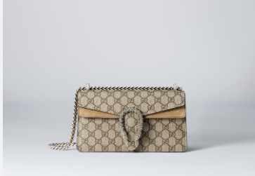

A continuación, se presentan algunas de las marcas de bolsos más vendidas y sus precios aproximados:
Neverfull: Esta bolsa tote espaciosa y versátil es conocida por su diseño clásico y funcionalidad. Precio estimado MXN 42,000.00
Speedy: Este bolso icónico es reconocido por su forma redondeada y su diseño elegante. Precio estimado MXN $2,030.00
Bolso 2.55: Un clásico atemporal diseñado por Coco Chanel, con su distintivo cierre de cadena y forma rectangular. Precio estimado MXN $221,080.60
Dionysus: Este bolso de hombro con cierre de cabeza de tigre es uno de los modelos más populares de Gucci. Precio estimado MXN $42,000.00
Marmont: Con su característico motivo de doble G, el bolso Marmont es un clásico moderno de Gucci. Precio estimado MXN €2.700
Birkin: Uno de los bolsos más icónicos de Hermes, el Birkin es conocido por su exclusividad y su diseño elegante. Precio estimado MXN $1,500,000.00
Kelly: Otro bolso emblemático de Hermes, el Kelly es un símbolo de elegancia y sofisticación. Precio estimado MXN $1,200,000.00
Galleria: Este bolso tote clásico de Prada es conocido por su diseño elegante y funcional. Precio estimado MXN $25,000.00
Cahier: Con su diseño estructurado y su cierre en forma de hebilla, el bolso Cahier es una opción moderna y sofisticada. Precio estimado MXN $35,000.00
Lady Dior: Un clásico de la casa Dior, el bolso Lady Dior es conocido por su diseño elegante y su emblemático motivo de cannage. Precio estimado MXN $70,000.00
Dior Book Tote: Una bolsa espaciosa con un diseño moderno y a menudo presenta estampados llamativos. Precio estimado MXN $50,000.00
>Baguette: Uno de los bolsos más icónicos de Fendi, el Baguette es conocido por su forma compacta y su diseño versátil. Precio estimado MXN $30,000.00
Peekaboo: Con su diseño estructurado y su cierre de doble hebilla, el bolso Peekaboo es una opción elegante y sofisticada. Precio estimado MXN $50,000.00